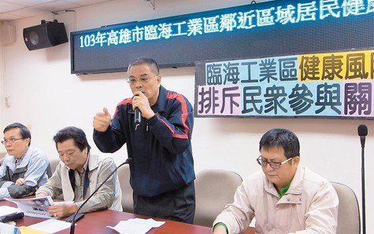

事件名稱：空氣致癌濃度小港全國最高
事件地點：高雄市小港區
事發狀況
台灣水資源保育聯盟等團體根據環保署監測站資料，發現高市小港區空氣致癌物苯、乙苯及苯乙烯濃度，均高於雲林台西，居全國之冠，苯最高致癌風險更超過千分之一。環團直指中鋼、中油及中石化等工廠是排放源，昨向市府陳情，要求業者停工、賠償，並為大林蒲居民做流行病學調查。
環保署空保處處長謝燕儒表示，空氣致癌污染物苯、乙苯及苯乙烯濃度的監測，採樣依不同季節、方法、產業淡旺季，會有不同結果，很難進行全國比較，但願意提供高市環保局協助，一同改善當地空氣品質。
黃安調表示，環保署位於小港國中的光化測站，高市小港區測到的苯、乙苯及苯乙烯三項污染物濃度，均高於雲林台西（台塑六輕所在地）測值，以三項致癌物計算致癌風險，小港平均致癌風險及最大致癌風險，均為雲林台西的三到五倍，最大致癌風險高於萬分之一，已超過百萬分之一，明顯逾越可接受範圍。
邱春華說，根據環保單位資料，中鋼、中油大林廠、中石化小港廠等都是苯的排放來源，尤其中鋼的排放量最多，環保署應要求這些工廠降低污染量，並進行流行病學調查，還大林蒲居民健康的生活環境。
調查結果
位於鳳鼻頭的龍鳳里長黃文裕表示，他不贊成遷村，而應是要遷廠，當地居民與這塊土地已有感情，鳳鼻頭、大林蒲是先有居民後來才設廠，遷村豈不變成乞丐趕廟公，當地在未設廠前的空氣還很好，是政府招商設廠後，空氣品質才變差，因此他強調應遷廠而非遷村。
位於大林蒲的鳳森里長陳清水指出，他瞭解的里民是傾向不遷村的比較多，包括中下經濟弱勢住民。現在是要遷村的講話比較大聲，主張要遷村的，很多人早已搬到草衙、二苓等外地，他們在鳳鼻頭祇保留祖宅與戶籍，等著領補償費。
有些主張遷村的人，用的是早年的汙染數據，其實現在大林蒲地區環保事件變少了，工廠汙染情況都有改善，另外，遷村要中央說了才算數，市府也無權談遷村，更不是一小撮人說遷就能遷。